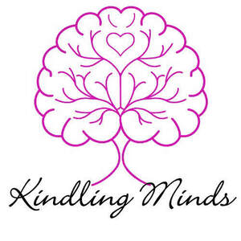

Trade Mark Journal No.2026/007 13 February 2026
UK00004332612 30 January 2026 (16,41)

- Class 16
- Printed booklets; Printed pamphlets; Printed stationery; Printed brochures; Printed flyers; Printed leaflets; Printed publications; Publications (Printed -); Printed photographs; Printed invitations; Printed books; Printed cards; Printed advertisements; Printed paper labels; Printed paper invitations; Printed coupons; Printed tickets; Printed newsletters; Forms, printed; Printed forms; Printed paper signs; Printed manuals; Printed menus; Printed certificates; Printed reports; Printed charts; Printed diagrams; Printed questionnaires; Printed timetables; Timetables (Printed -); Printed visuals; Printed tables; Printed curricula; Printed guides; Printed packaging materials of paper; Printed informational sheets; Printed programmes; Printed informational cards; Printed promotional material; Printed informational flyers; Printed advertising boards of paper; Printed information sheets; Printed lessons; Printed plans; Printed matter; Printed cartoon strips; Printed answer sheets; Printed awards; Printed periodical publications; Printed luggage labels; Printed comic strips; Partially printed forms; Printed flip charts; Printed informational folders; Printed stories in illustrated form; Printed educational materials; Printed teaching material; Offset printing paper for pamphlets; Printed consumer reports; Paper for printing photographs; Printed teaching materials; Printed seminar notes; Printed mail response cards; Printing papers; Printed correspondence course materials; Printed training materials; Printed greeting cards with electronic information stored therein; Digital printing paper; Printed price lists; Print letters; Print characters; Prints; Printing paper; Graphic prints; Printing fonts; Cartoon prints; Photographic prints; Printed calendars; Color prints; Printed patterns; Photographs [printed]; Pictorial prints; Graphic art prints.
- Class 41
- Education; Education and training; Academies [education]; Education and instruction; Education services; Services of schools [education]; University education services; Education, teaching and training; Academy services (Education -); Education academy services; Academy education services; Training and education services; Education and training services; Education and instruction services; Education examination; Provision of education courses; Educational services for providing courses of education; Higher education services; Provision of training and education; Provision of education and training; Providing of education; Education information; Information (Education -); Primary education services; Adult education services; Computer education training services; Education and training consultancy; Primary education services relating to literacy; Further education; Online education services; Education courses relating to automation; Education and training in the field of occupational health and safety; Vocational guidance [education or training advice]; Education information services; Education services for imparting language teaching methods; Secondary school educational services; Education services relating to business training; Educational and teaching services; Training or education services in the field of life coaching; Vocational education for young people; Education services in the nature of courses at the university level; Career advisory services (education or training advice); Provision of facilities for education; Publication of printed matter and printed publications; Publication of printed directories; Publication of printed matter; Publishing of printed matter; Publication of printed matter in electronic form; Publication of printed matter, other than publicity texts, in electronic form; Publication of printed matter, other than publicity texts; Publication of printed matter in electronic form on the Internet; Publication of educational printed matter; Vocational education; Pre-school education; Vocational education and training services; Kindergarten services [education or entertainment]; Career counseling [education]; Teaching of diet education; Physical education; Education academy services for teaching languages; Entertainment, education and instruction services; Education academy services for teaching art history; Computer education training; Medical education services; Education services relating to vocational training; Residential education courses; Linguistic education and training services; Boarding school education; Physical education instruction; Education academy services for teaching acting; Technological education services; Management of education services; Management education services; Research in the field of education; Guidance (Vocational -) [education or training advice]; Education, entertainment and sport services; Career counselling [training and education advice]; Provision of education courses relating to electronics; Adult education services relating to commerce; Education, entertainment and sports; Education services relating to commerce; Provision of education courses relating to telecommunications; Education services relating to industry; Educational services provided by institutes of further education; Coaching; Coaching [training]; Career counselling and coaching; Life coaching (training); Coaching services; Educational services in the nature of coaching; Teacher training services; Training in business skills; Career counselling relating to education and training; Training of teachers; Training; Staff training services; Providing of training, teaching and tuition; Teaching academy services; Career and vocational training; Team building (education); Training and further training consultancy; Instructional and training services; Conducting training seminars for clients; Organisation of training seminars; Consultancy services relating to the education and training of management and of personnel; Business training consultancy services; Organising of business training; Training for parents in parenting skills; Training and instruction; Business training services; Career and vocational counselling; Business training provided through a game; Organisation of training courses; Organisation of training; Training services.
Kara Ashleigh Hunter